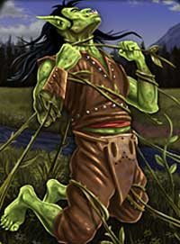
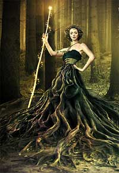
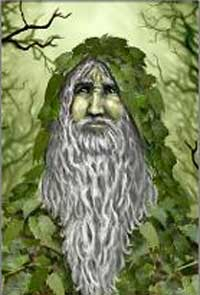
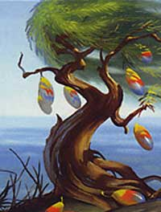
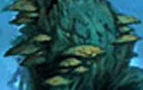

1° LIVELLO DI POTERE
| Forest Club | Conjuration | |
| Sphere : | Creation | |
| Range : | 0 |
 |
| Components : | V, S, M | |
| Duration : | Speciale | |
| Casting Time : | 1 round | |
| Area of Effect : | The caster | |
| Saving Throw : | Nessuno |
Questo incantesimo può essere lanciato solo in aree boschive. Quando il druido lancia questa magia costui otterrà alla fine del round un bastone di legno tra le sue mani. Questo bastone potrà essere considerato a tutti gli effetti un bastone da guerra (quartestaff) che il druido, o qualsiasi altra creatura, potrà regolarmente utilizzare in combattimento. Qualora l'incantesimo sia lanciato almeno al 5° livello di lancio il bastone sarà considerato a tutti gli effetti di qualità superba. L'incantesimo dura fino al raggiungimento del successivo flusso di energia divina a meno che il bastone non si rompa precedentemente. Il componente materiale di questo incantesimo è il simbolo sacro del druido.
| Forest Vanishing | Alteration |
| Sphere : | Plant |
| Range : | 0 |
| Components : | V, S |
| Duration : | Istantanea |
| Casting Time : | 2 |
| Area of Effect : | The caster |
| Saving Throw : | Nessuno |
Attraverso l'uso di questa magia il druido potrà farsi letteralmente inglobare dalla vegetazione presente nella zona in cui si trova per riapparire solo alla fine del round in qualsiasi altra posizione libera di foresta presente entro 15 metri di distanza da quella in cui si trovava (il druido potrà scegliere tale posizione alla fine del round unicamente tra le posizioni di foresta che si trovino a tale distanza, se, però, non vi è alcuna zona di foresta non occupata alla fine del round, ivi compresa quella di partenza, costui potrà apparire in una posizione adiacente ad una qualsiasi posizione di foresta che risulti occupata). Quando il druido svanisce utilizzando questo incantesimo non è soggetta ad alcun attacco di opportunità. Questo metodo di spostamento deve essere considerato a tutti gli effetti non convenzionale (ad esempio, effetti che seguono il druido fino a che si sposta con comuni forme di movimento saranno perduti). Quest'incantesimo può essere utilizzato solo qualora il druido occupi una posizione di foresta (almeno foresta leggera) ciò anche se l'area in cui costui si trova non possa essere definita, in generale, come un'area boschiva (si pensi, ad esempio, ad un piccolo giardino od alla presenza di arbusti in una zona di montagna).
| Heal the Seed | Alteration |
| Sphere : | Plant |
| Range : | Tocco |
| Components : | V, S |
| Duration : | 1 ora per livello |
| Casting Time : | 1 round |
| Area of Effect : | Albero Guardiano (seme) |
| Saving Throw : | Nessuno |
Attraverso l'uso di questa magia il druido può curare il proprio Albero Guardiano. L'incantesimo può essere lanciato sulla creatura solo quando la stessa ha assunto la forma di seme. Orbene, alla fine di ogni ora di durata della magia, l'Albero Guardiano rigenererà 1d3 punti ferita persi in precedenza. Se il seme viene sotterrato in un'area di foresta o boschiva, nel corso della durata della magia, ad ogni dado di cura sarà applicato un bonus di +1. Se l'Albero Guardiano acquista la forma di albero nel corso della durata di questo incantesimo, questa magia terminerà immediatamente.
| Nectar | Conjuration | |
| Sphere : | Creation | |
| Range : | Tocco |
|
| Components : | V, S, M | |
| Duration : | Istantanea | |
| Casting Time : | 1 round | |
| Area of Effect : | Speciale | |
| Saving Throw : | Nessuno |
Questo incantesimo può essere lanciato solo in aree boschive. Il druido lancia questa magia su una piccola caraffa di legno intarsiato con bassorilievi di foreste e piante che è possibile chiudere con un tappo a vite. Al termine del lancio dell'incantesimo la caraffa sarà riempita da nettare leggermente alcolico dal gusto unico ed estremamente apprezzato (alla stregua di un vino di altissima qualità), specie dagli elfi e dalle creature delle foreste che amano berlo per festeggiare. Il nettare sarà sufficiente a soddisfare sia la fame che la sete di una creatura di dimensioni medie per un'intera giornata. Avendo, inoltre, proprietà guarenti lo stesso farà recuperare alla fine del round in cui è stato ingerito 2 punti ferita persi da colui che lo ha ingerito. Si tratta di una cura non magica assimilabile a tutti gli effetti ad una cura ottenuta tramite il riposo. La somministrazione di ulteriori dosi di nettare nel corso della medesima giornata non cumulerà i suoi effetti curativi. Se non consumato il nettare svanirà al raggiungimento del successivo flusso di energia divina. Parimenti, il nettare svanirà se sarà travasato dalla caraffa senza essere consumato immediatamente. Il componente materiale di questo incantesimo è la suddetta caraffa dal valore di 50 monete d'oro e dal peso di 1 libbra che non si consuma al lancio dell'incantesimo.
| Strangling Vines | Conjuration |
| Sphere : | Plant |
| Range : | 15 metri |
| Components : | V, S, M |
| Duration : | Speciale |
| Casting Time : | 6 |
| Area of Effect : | Un esagono (3 metri) |
| Saving Throw : | Speciale |
|
 |
Quando il druido lancia questo incantesimo convoca ad esistenza nella posizione occupata dalla creatura alcune vigne strangolanti che l'attaccheranno immediatamente provando a stritolarla. La creatura può provare ad evitare l'attacco delle vigne superando un tiro salvezza su riflessi. Le vigne resteranno nella posizione prescelta per 10 round. Qualora la medesima creatura, nonostante abbia superato il suddetto tiro salvezza, resti nella posizione occupata nei round successivi di durata della magia la stessa dovrà superare, all'inizio di ogni round (come non azione da compiersi prima della dichiarazione delle iniziative), un nuovo tiro salvezza su riflessi. La medesima regola sarà applicata ad ogni creatura entri nella posizione delle vigne al momento del suo ingresso ed all'inizio di ogni ulteriore round di permanenza. Si noti, però, che le vigne effettueranno un unico attacco al round per cui solo la prima creatura presente od entrante, nel corso di ogni round, nella posizione dovrà superare questo tiro salvezza. Deve osservarsi, inoltre, che le creature di dimensioni superiori a Large non saranno attaccate dalle vigne strangolanti. Se una creatura fallisce il tiro salvezza la stessa sarà catturata dalle vigne, non potrà muoversi dalla posizione occupata, sarà considerata incapacitata e subirà alla fine di ogni round 1d4 danni da stritolamento. La creatura potrà provare a liberarsi (anche ogni round) con un'azione complessa che fa accumulare un punto fatica e che richiede il superamento di un tiro salvezza su robustezza modificato dalla forza in luogo che dalla costituzione. Se il tiro salvezza riesce la creatura si sarà liberata ma correrà comunque il rischio di essere stritolata nuovamente qualora continui a restare nella posizione occupata (una creatura, quindi, che entri nella pozione, sia bloccata e superi il tiro salvezza, non potendo più spostarsi correrà il rischio di essere bloccata nuovamente all'inizio del successivo round). Se la posizione in cui il druido convoca le vigne è una posizione di vegetazione almeno pari ad una foresta leggera entrambi tutti i tiri salvezza riceveranno una penalità di -5%. Il componente materiale di questo incantesimo è un pezzo di radice di vigna strangolante dal valore di 10 monete d'oro e dal peso di 0,2 libbre che si consuma al lancio della magia. |
| Thick Bark | Alteration |
| Sphere : | Plant |
| Range : | Tocco |
| Components : | V, S, M |
| Duration : | Speciale |
| Casting Time : | 1 round |
| Area of Effect : | Albero Guardiano (pianta) |
| Saving Throw : | Nessuno |
Attraverso l'uso di questa magia il druido conferisce al suo Albero Guardiano una corteccia più spessa. L'incantesimo può essere lanciato sulla creatura solo quando la stessa ha assunto la forma di albero. Orbene, per tutta la durata della magia, che termina al raggiungimento del successivo momento di flusso di energia divina o fine a quando l'Albero Guardiano acquista la forma di seme, costui riceverà un bonus costante di +1 alla classe armatura che sarà considerato a tutti gli effetti come dovuto alla corazza della pianta. Il componente materiale di questo incantesimo è un pezzo selezionato della corteccia di un albero raro dal valore minimo di 5 g.p. e dal peso di 0,2 libbra che si consuma al lancio della magia.
2° LIVELLO DI POTERE
| Forest Domain | Alteration |
| Sphere : | Plant |
| Range : | Tocco |
| Components : | V, S, M |
| Duration : | Speciale |
| Casting Time : | 1 round |
| Area of Effect : | Una creatura |
| Saving Throw : | Nessuno |
Attraverso l'uso di questa magia il druido conferisce alla creatura toccata il potere del dominio delle foreste. Per tutta la durata della magia, che termina al raggiungimento del successivo momento di flusso di energia divina, quando la creatura che ha acquisito questo potere si trova all'interno di un'area che può essere definita boschiva o di foresta costei otterrà una serie di benefici. Innanzitutto, la creatura potrà muoversi nelle foreste riducendo di un livello l'impedimento dovuto all'attraversamento di quel tipo di terreno (ad esempio, costui può muoversi in una foresta leggera considerata di primo livello di impedimento ad un normale fattore movimento od in una foresta pesante considerata di secondo livello di impedimento come se fosse una foresta leggera). In secondo luogo, quando la creatura occupa una posizione con presenza di vegetazione tale da considerarsi almeno di foresta leggera riceverà maggiore copertura dalle piante ivi presenti. Gli avversari riceveranno una penalità di -1 al tiro per colpire e del 10% di fallire negli incantesimi diretti contro la creatura; penalità cumulativa rispetto alle normali penalità imposte dalla presenza della vegetazione. Tale beneficio, inoltre, sarà applicato anche nei confronti degli attacchi in corpo a corpo. Il componente materiale di questo incantesimo è un pezzo selezionato della corteccia di un albero raro dal valore minimo di 5 g.p. e dal peso di 0,2 libbra che si consuma al lancio della magia.
| Healing Roots | Alteration |
| Sphere : | Plant |
| Range : | Tocco |
| Components : | V, S, M |
| Duration : | 1 ora per livello |
| Casting Time : | 1 round |
| Area of Effect : | Un umanoide |
| Saving Throw : | Nessuno |
|
 |
Questo incantesimo può essere lanciato validamente solo su una creatura umanoide il cui corpo sia di tipo animale e basato sull'energia positiva. Questa magia, inoltre, può essere lanciata solo qualora il beneficiario risulti occupare una superficie di comune terreno in modo tale da permettere alle radici di insinuarsi nello stesso (non può essere lanciato quindi su roccia, pietra, sabbia od altra pavimentazione). Quando la magia è lanciata la parte inferiore del corpo del ricevente, fino al bacino, sarà trasformata in radici. Esse assorbiranno linfa vitale dal terreno concedendo al beneficiario una lenta rigenerazione delle ferite. Al termine di ogni ora di durata dell'incantesimo, infatti, il beneficiario rigenererà 1 punto ferita precedentemente perso. Se questa magia è lanciata in una foresta od una zona boschiva il beneficiario rigenererà 1d2 punti ferita all'ora. Se lanciata su una creatura in stato comatoso farà rigenerare la creatura fino a che la stessa non raggiunge un punto ferita per poi terminare i suoi effetti. Per tutta la durata della magia il beneficiario si considererà incapacitato ed impossibilitato a spostarsi dalla posizione occupata. Una magia di Dispel Magic lanciata con successo farà trasformare il beneficiario nella sua originaria forma alla fine del round in corso. Si noti che fino a che l'incantesimo è in corso, il beneficiario sarà considerato come una creatura piantiforme al solo fine del versamento sulle sue radici di una Potion of Plant Health (link). Il componente materiale di questo incantesimo è un pezzo di radice di una rara pianta rigenerante dal valore di 10 monete d'oro e dal peso di 0,2 libbre che si consuma al lancio della magia. |
| Lengthen the Branches | Alteration |
| Sphere : | Plant |
| Range : | Tocco |
| Components : | V, S |
| Duration : | Speciale |
| Casting Time : | 1 round |
| Area of Effect : | Albero Guardiano (pianta) |
| Saving Throw : | Nessuno |
Attraverso l'uso di questa magia il druido fa crescere ed allungare i rami del suo Albero Guardiano. L'incantesimo può essere lanciato sulla creatura solo quando la stessa ha assunto la forma di albero. Orbene, per tutta la durata della magia, che termina al raggiungimento del successivo momento di flusso di energia divina o fine a quando l'Albero Guardiano acquista la forma di seme, costui si considererà avere una maggiore distanza di attacco in corpo a corpo potendo colpire avversari che si trovino fino a 4 metri di distanza (su mappa esagonale con dimensione degli esagoni di 3 m. possono effettuarsi, quindi, attacchi su avversari posizionati ad 1 od a 2 esagoni di distanza).
| Mystical Herbalism | Alteration |
| Sphere : | Plant |
| Range : | Speciale |
| Components : | V, S, M |
| Duration : | Speciale |
| Casting Time : | 5 |
| Area of Effect : | Speciale |
| Saving Throw : | Speciale |
Questa magia strettamente connessa al Potere delle Sacre Erbe rappresenta una delle principali caratteristiche dei druidi. Questa magia può essere, infatti, lanciata esclusivamente utilizzando come componenti materiali alcune rare piante che il druido ha necessariamente e precedentemente raccolto di persona utilizzando la competenza Herbalism. Gli effetti di questo incantesimo, inoltre, variano a seconda della pianta utilizzata come componente materiale come indicato nella seguente tabella:
| EFFETTI DEL MYSTICAL HERBALISM |
|
Bacche Oppiacee
dell'Elfo Grigio Range: Tocco Durata: Istantanea Area of Effect: Un utente di magia Saving Throw: Nessuno Effetto: L'utente di magia toccato recupera immediatamente 5 punti magia generici + 1 punto magia supplementare ogni 2 livelli di lancio dell'incantesimo (5 punti magia al 1° livello, 6 punti magia al 2° e 3° livello, 7 punti magia al 4° e 5° livello, e così via...). I punti saranno recuperati secondo le normali regole previste dagli utenti di magia. |
|
Viola dei Re Erlin Range: 15 metri Durata: 1 turno Area of Effect: Una creatura Saving Throw: Negates Effetto: La creatura deve superare un tiro salvezza su mente. Creature aventi più di 7 dadi vita/livelli sono immuni a questo incantesimo. Se il tiro salvezza fallisce la stessa si adagerà al suolo finendo knockdown in uno stato di sonno magico (creature in volo planano al suolo senza schiantarsi). La creatura addormentata continuerà a dormire non essendo svegliata da normali rumori (anche da frastuoni dovuti alla battaglia). La creatura potrà essere svegliata fisicamente con un'azione complessa (consistente in un energico scuotimento). Danni fisici o intensi cambiamenti di stato (si pensi all'immersione in acqua della creatura) sveglieranno sicuramente la creatura. In ogni caso, la creatura si sveglierà alla fine del round in corso potendo agire solo a partire dal successivo round. Costei, inoltre, sarà ancora parzialmente stordita dalla sonnolenza magica nei due rounds successivi a quello in cui si è svegliata e subirà le seguenti penalità (gli avversari non avranno benefici al loro tiro per colpire): 1° round : -2 ai tiri per colpire, -6 % ai tiri salvezza e 20% di possibilità di fallire la concentrazione per il lancio della magia; 2° round : -1 ai tiri per colpire, -3 % ai tiri salvezza e 10% di possibilità di fallire la concentrazione per il lancio della magia. |
|
Ninfea Curativa
(Druido
Guardiano) Range: Tocco Durata: Istantanea Area of Effect: Una creatura Saving Throw: None Effetto: La magia infonde nella creatura toccata un flusso di energia positiva. L'energia positiva sprigionata da questo incantesimo permetterà al druido di curare 1d8 punti ferita persi, in precedenza, dalla creatura toccata. Questo incantesimo non avendo natura rigenerativa non permette di curare le ferite prodotte dall'acido. Questa magia, inoltre, non avrà alcun effetto sulle creature inanimate (si pensi ad una comune pianta) e sulle creature non dotate di un corpo organico basato sull'energia positiva (si pensi, ad esempio, alla categoria dei costruiti ed agli elementali). Infine, le creature la cui essenza si basa sull'energia negativa (si pensi ad i non-morti) non solo non riceveranno alcun beneficio dalla sottoposizione a questo incantesimo ma subiranno 1d8 danni per l'irradiamento di energia positiva per loro letale. |
|
Magnolia Argentata
(Druido Guardiano) Range: 15 metri Durata: Istantanea Area of Effect: Una creatura Saving Throw: 1/2 Effetto: La magia sprigiona un bagliore argentato di pura energia positiva che colpisce la creatura selezionata. Sebbene questo flusso non sia in grado di produrre effetti sulle creature il cui corpo si basa sull'energia positiva, su quelle inanimate (si pensi ad una comune pianta) e su quelle non dotate di un corpo organico basato sull'energia positiva (si pensi, ad esempio, alla categoria dei costruiti ed agli elementali), se diretto su una creatura la cui essenza si basa sull'energia negativa (si pensi ad i non-morti) la stessa subirà 2d6 danni per l'irradiamento di energia positiva per loro letale. Questi danni possono essere dimezzati superando un tiro salvezza su energia vitale. |
|
Fiordaliso Dorato,
Erba Vescica Gigante Range: 15 metri Durata: Istantanea Area of Effect: Una creatura Saving Throw: Negates Effetto: La magia sprigiona un raggio di colore verdastro che colpisce la vittima selezionata avvelenandola. La vittima, dunque, dovrà superare un tiro salvezza su veleno (senza applicazione di alcun modificatore per il livello e la magia) per non subire del seguente veleno a contatto: Onset 1 round, Effetti 0/Paralizzato (Hold) per 1d3+1 round, Delay None, Tiro Salvezza 0, Assuefazione 1 turno. |
|
Mais Miracoloso,
Sequoia Nana, Muschio Purpureo Range: Tocco Durata: 1 ora per livello Area of Effect: Una creatura Saving Throw: None Effetto: Quando il druido lancia questa magia e tocca la creatura, questa rigenererà lentamente i punti ferita persi al ritmo di 1 punto ferita all'ora. Si noti che è una rigenerazione leggera per cui non cura direttamente i danni prodotti da tiri critici ma può, se indirizzata su questi, velocizzare il loro recupero (in tal caso non sono però recuperati punti ferita). In ogni caso non cura le emorragie. Questa rigenerazione si cumula con tutti gli altri tipi di rigenerazione ma sulla medesima creatura può avere effetto solo uno di questi incantesimi alla volta (od incantesimi similari come la magia Snake Regeneration). Se questo incantesimo viene lanciato su una creatura in coma, sarà immediatamente stabilizzata e potrà rigenerare fino ad arrivare a svegliarsi ad un punto ferita prima che la magia termini i suoi effetti. |
|
Acacia Gigante Range: Tocco Durata: Speciale Area of Effect: Una creatura Saving Throw: None Effetto: Questo incantesimo può essere utilizzato solo su creature aventi un corpo di tipo animale basato sull'energia positiva (non quindi su creature come elementali, piantiformi, non morti, melmoidi, ecc...). Quando il druido lancia questa magia e tocca la creatura, il fisico della stessa sarà rinvigorito e costei acquisterà 5 punti ferita supplementari. Questi punti ferita saranno i primi ad essere perduti in caso di danno e potranno essere regolarmente curati fino a che la magia ha effetto. L'incantesimo termina al raggiungimento del successivo momento di flusso di energia divina. |
|
Agrifoglio Nero,
Chiodo Nero
(Druido Vendicatore) Range: 15 metri Durata: Istantanea Area of Effect: Una creatura Saving Throw: Negates Effetto: La magia sprigiona un raggio di colore verdastro che colpisce la vittima selezionata avvelenandola. La vittima, dunque, dovrà superare un tiro salvezza su veleno (senza applicazione di alcun modificatore per il livello e la magia) per non subire gli effetti del seguente veleno a contatto: Onset 1 round, Effetti 4/10, Delay 2, Tiro Salvezza 0, Assuefazione Nessuna. |
|
Pino del Tramonto,
Foglia di Sangue Range: 15 metri Durata: Speciale Area of Effect: Una creatura Saving Throw: None Effetto: La magia blocca, cauterizzando definitivamente, ogni forma di emorragia, sia esterna che interna, sia di origine magica che naturale, di cui la creatura è afflitta ed impedisce per un intero turno che la stessa possa essere soggetta effetti di dissanguamento di qualsiasi tipo. |
|
Stella delle Nevi
Range: Tocco Durata: 1 turno Area of Effect: Una creatura Saving Throw: None Effetto: La creatura sarà protetta da ogni forma di avvelenamento sia di origine magica che naturale per tutta la durata dell'incantesimo. Questa magia non neutralizza effetti dei veleni alla quale la creatura è già sottoposta al lancio della stessa. Questi veleni, infatti, continueranno a fare il loro corso ed a danneggiare la creatura regolarmente. La magia evita, infatti, che durante il suo corso la creatura possa essere nuovamente avvelenata impedendo totalmente alle sostanze tossiche di iniziare ad agire sul corpo della creatura protetta. |
|
Tulipano
Putrescente Range: 15 metri Durata: Istantanea Area of Effect: Una creatura Saving Throw: Negates Effetto: La magia sprigiona un raggio di colore nero che colpisce la vittima selezionata. La vittima, dunque, dovrà superare un tiro salvezza su malattia (senza applicazione di alcun modificatore per il livello e la magia) per non subire gli effetti debilitanti della malattia. Se il tiro salvezza fallisce, la vittima sarà considerata incapacitata per un turno. Le creature immuni alle malattie non subiranno l'effetto di questo incantesimo. |
|
Ulivo Marino Range: 0 Durata: Istantanea Area of Effect: Speciale Saving Throw: 1/2 Effetto: Il druido fa divampare una fiamma capace di investire le tre posizioni frontali che gli sono davanti. Tutte le creature che occupano le posizioni frontali dinanzi al druido saranno quindi investite dalle fiamme e subiranno 1d6 danni da fuoco comune, +1 danno supplementare per ogni livello di lancio della magia (per fare un esempio la magia produrrà 1d6+4 danni al 4° livello di lancio). Le vittime coinvolte dall'incantesimo potranno superare un tiro salvezza contro riflessi per dimezzare i danni subiti. |
|
Fungo Fantasma
(Druido
Vendicatore) Range: 15 metri Durata: Istantanea Area of Effect: Una creatura Saving Throw: 1/2 Effetto: La magia sprigiona un raggio oscuro di colore viola di energia negativa che colpisce la creatura selezionata. Sebbene questo flusso non sia in grado di produrre effetti sulle creature il cui corpo si basa sull'energia negativa, su quelle inanimate (si pensi ad una comune pianta) e su quelle non dotate di un corpo organico basato sull'energia positiva (si pensi, ad esempio, alla categoria dei costruiti ed agli elementali), se diretto su una creatura la cui essenza si basa sull'energia positiva la stessa subirà 2d6 danni per l'irradiamento della letale energia negativa. Questi danni possono essere dimezzati superando un tiro salvezza su energia vitale. |
|
Fungo Ombra Range: Tocco Durata: Speciale Area of Effect: Una creatura Saving Throw: None Effetto: Questo incantesimo può essere utilizzato solo su creature aventi un corpo di tipo animale basato sull'energia positiva (non quindi su creature come elementali, piantiformi, non morti, melmoidi, ecc...). Quando il druido lancia questa magia e tocca la creatura, la stessa subirà 1d6 danni da energia negativa ma il suo fisico della stessa diventerà resistente al primo risucchio di energia vitale subito. L'incantesimo termina al raggiungimento del successivo momento di flusso di energia divina o quando sarà annullato il primo risucchio di energia. Si noti che, fino a che questa magia non sarà terminata, la stessa creatura non potrà validamente riceverne una nuova. |
|
Viola di
Mezzanotte Range: Tocco Durata: Speciale Area of Effect: Una creatura Saving Throw: None Effetto: Questo incantesimo può essere utilizzato solo su creature aventi comuni organi visivi. Orbene, per tutta la durata della magia, la creatura riceverà un'infravisione nel raggio di 15 metri (saranno applicate le comuni regole sull'infravisione). Se la magia è utilizzata su una creatura già dotata di infravisione, il periodo di transizione per il passaggio dalla luce al buio ed il periodo di parziale accecamento in caso di passaggio dal buio alla luce saranno annullati per tutta la durata dell'incantesimo. L'incantesimo termina al raggiungimento del successivo momento di flusso di energia divina. |
| Thorny Trunk | Alteration |
| Sphere : | Plant |
| Range : | Tocco |
| Components : | V, S, M |
| Duration : | Speciale |
| Casting Time : | 1 round |
| Area of Effect : | Albero Guardiano (pianta) |
| Saving Throw : | Nessuno |
Attraverso l'uso di questa magia il druido fa crescere una moltitudine di spine acuminate sul tronco del suo Albero Guardiano. L'incantesimo può essere lanciato sulla creatura solo quando la stessa ha assunto la forma di albero. Orbene, per tutta la durata della magia, che termina al raggiungimento del successivo momento di flusso di energia divina o fine a quando l'Albero Guardiano acquista la forma di seme, costui si considererà avere una particolare difesa. Questi aculei, infatti, possono ferire tutti coloro che attaccano l'albero in corpo a corpo con armi (ad eccezione delle Polearm) od attacchi fisici. In particolare, ogni volta che una creatura attacca in corpo a corpo l'albero, la stessa dovrà superare un tiro salvezza su riflessi. A questo tiro non si applicheranno i modificatori dovuti alla differenza di livello tra il mostro e la creatura attaccante. Se l'attacco è effettuato con un'arma di taglia large la creatura riceverà un bonus di +5 al tiro salvezza, se l'attacco è effettuato con un'arma di taglia medium la creatura non riceverà modificatori al tiro salvezza, se l'attacco è effettuato con un'arma di taglia small la creatura riceverà un malus di -5 al tiro salvezza, se l'attacco è effettuato con attacchi fisici la creatura riceverà un malus di -10 al tiro salvezza. Il tiro salvezza deve essere ripetuto per ogni singolo attacco effettuato contro il mostro. La creatura, inoltre, può impiegare punti combattimento per ricevere bonus a tali tiri salvezza. Ogni 3 punti di combattimento impiegati la creatura riceverà un bonus di +1 al tiro salvezza su quel singolo attacco. Non possono essere impiegati più di 9 punti combattimento (+3 al tiro salvezza) su ogni singolo attacco effettuato. I punti combattimento vanno utilizzati direttamente prima del lancio del dado relativo al tiro salvezza che la creatura desidera migliorare. Si tratta di una modalità speciale di utilizzo dei punti combattimento che non incide (ad esempio per quanto attiene al cumulo) sulle normali regole concernenti l'uso dei punti combattimento. Ogni volta che la vittima fallisce il tiro salvezza la stessa subisce 1d3 danni da punta (perforazione). Se il tiro salvezza riesce con un successo critico la creatura non dovrà effettuare alcuna prova per i due successivi attacchi effettuati nei confronti del mostro nel medesimo combattimento. Se il tiro salvezza fallisce con un fallimento critico il danno da punta prodotto sarà considerato un danno critico da punta. Le spine non sono in grado di provocare alcun danno alle creature di dimensioni superiori a Large. Il componente materiale di questo incantesimo è la miniatura di una grossa spina realizzata in argento ed intarsiata con foglie dal costo di 50 monete d'oro e dal peso di 0,2 libbre che non si consuma al lancio dell'incantesimo.
3° LIVELLO DI POTERE
| Enlarged Trunk | Alteration |
| Sphere : | Plant |
| Range : | Tocco |
| Components : | V, S |
| Duration : | Speciale |
| Casting Time : | 1 round |
| Area of Effect : | Albero Guardiano (pianta) |
| Saving Throw : | Nessuno |
Attraverso l'uso di questa magia il druido fa crescere il tronco del suo Albero Guardiano. L'incantesimo può essere lanciato sulla creatura solo quando la stessa ha assunto la forma di albero. Orbene, per tutta la durata della magia, che termina al raggiungimento del successivo momento di flusso di energia divina o fine a quando l'Albero Guardiano acquista la forma di seme, costui riceverà a tutti gli effetti un dado vita supplementare (ottenendo, ad esempio, il modificatore al tiro per colpire, i punti ferita supplementari, gli eventualmente migliori tiri salvezza, ecc...). Questa magia, però, non permetterà di applicare all'Albero Guardiano poteri speciali supplementari in quanto il dado vita addizionale è solo fittizio e temporaneo.
| Forest Camouflage | Conjuration | |
| Sphere : | Plant | |
| Range : | 0 |
|
| Components : | V, S | |
| Duration : | Speciale | |
| Casting Time : | 1 round | |
| Area of Effect : | The Caster | |
| Saving Throw : | Nessuno |
|
 |
Questo incantesimo può essere lanciato e perdura solo fino a quando il druido si trovi in aree boschive. Quando il druido lancia questa magia il suo corpo e gli oggetti da costui indossati vengono cosparsi di fogliame e muschio. Orbene, per tutta la durata della magia, che termina al raggiungimento del successivo momento di flusso di energia divina, il druido potrà provare a mimetizzarsi nella vegetazione. In particolare, quando il druido resta fermo diviene capace di mimetizzarsi nella foresta. In particolare, costui non potrà essere notato dalle creature che passino ad una distanza superiore a 30 metri ed otterrà una possibilità pari al 55% +2% per livello di lancio della magia, di non essere notato dalle creature che passano ad una distanza inferiore. Utilizzare quest'abilità richiede un'azione complessa dalla durata dell'intero round e, quindi, il druido potrà risultare nascosto solo alla fine del round. Per restare nascosto costui non potrà compiere altre azioni complesse e non potrà spostarsi (si faccia eccezioni per piccoli movimenti effettuati sul posto). Si noti che questa abilità non può essere utilizzata nei confronti delle creature che hanno già visto il druido fino a che queste non escono dalla sua linea visiva. Si noti che il tiro percentuale è effettuato segretamente dal druido un'unica volta ed il suo risultato sarà applicato a qualsiasi soggetto fino a che costui non si sposti od agisca diversamente. Il risultato di questo tiro si considererà incrementato di una penalità del +10% al fine di verificare se il druido si è nascosto nei confronti di soggetti dotati di Sensi Superiori o che posseggono la competenza Observation ed abbiano superato una prova nella stessa (+15% nei confronti delle creature che abbiano entrambe le caratteristiche). Il risultato del tiro si considererà incrementato di un'ulteriore penalità del +25% al fine di verificare se il druido si è nascosto nei confronti di soggetti dotati di infravisione (che sia attiva e sempre che la creatura si trovi all'interno del suo raggio). Qualora il druido risulti nascosto con successo alla vista dei suoi avversari ed agisca improvvisamente costui imporrà loro una penalità di -3 alla relativa prova sulla sorpresa. |
| Healing Fruits | Conjuration | |
| Sphere : | Plant | |
| Range : | Tocco | |
| Components : | V, S, M | |
| Duration : | Speciale | |
| Casting Time : | 1 turno | |
| Area of Effect : | Albero Guardiano (pianta) | |
| Saving Throw : | Nessuno |
|
 |
Attraverso l'uso
di questa magia il druido guardiano fa spuntare dal proprio Albero Guardiano
magici frutti aventi proprietà guarenti in quanto carichi di energia positiva.
Per lanciare l'incantesimo occorre che per un intero turno sia l'Albero
Guardiano che il druido restino fermi ed a contatto l'uno con l'altro.
Al termine
del turno di lancio dell'incantesimo sulla pianta cresceranno alcuni frutti
multicolori dalla forma oblunga. Ognuno di questi frutti pesa 0,2 libbre e può
essere mangiato con un'azione complessa dalla durata di un intero round. Alla
fine del round, la creatura che ha mangiato il frutto sarà curata
immediatamente di 1d6+1 punti ferita persi, in precedenza. Si noti che queste
cure devono considerarsi
magiche e basate sull'energia positiva, le quali, non avendo natura
rigenerativa, non permettono di rigenerare le ferite prodotte dall'acido. Gli
effetti di questi frutti, inoltre, non si applicheranno sulle creature inanimate
(si pensi ad una comune pianta) e sulle creature non dotate di un corpo organico
basato sull'energia positiva (si pensi, ad esempio, alla categoria dei costruiti
ed agli elementali). Infine, qualora una creatura la cui essenza si basi
sull'energia negativa (si pensi ad un non-morto) ingerisca uno di questi frutti,
non solo la stessa non riceverà alcun beneficio ma subirà 1d6+1 danni per il
letale irradiamento di energia positiva. Il druido guardiano farà crescere sulla
pianta uno di questi frutti ogni tre livelli di lancio (arrotondati per difetto,
1 dal 1° al 3° livello di lancio, 2 dal 4° al 6° livello di lancio, e così
via...). Questi frutti manterranno le proprie capacità curative fino al
raggiungimento del successivo flusso di energia divina allorquando, se non
precedentemente ingeriti, si sgretoleranno in polvere. Si noti che questi frutti
non possono essere ingeriti da creature incoscienti, paralizzate od in stato
comatose essendo necessario, al fine di ottenere l'effetto curativo, che gli
stessi siano mangiati.
|
| Holy Fertilizer | Alteration |
| Sphere : | Plant |
| Range : | Tocco |
| Components : | V, S |
| Duration : | 1 ora |
| Casting Time : | 1 round |
| Area of Effect : | Albero Guardiano (seme) |
| Saving Throw : | Nessuno |
Questo incantesimo
può essere lanciato dal druido sul proprio Albero Guardiano unicamente quando la creatura ha assunto la forma di
seme. Orbene, per la durata di un'ora questa magia permetterà di ottenere i
seguenti benefici:
- Ogni eventuale magia di Heal the Seed lanciata sul seme farà recuperare
all'Albero Guardiano i punti ferita previsti alla fine di ogni round invece che
al termine di ogni ora.
- In caso di trasformazione da seme a pianta, nel corso delle durata di questo
incantesimo, il relativo rituale avrà una durata complessiva pari ad un round ma
questo incantesimo terminerà immediatamente.
| Poisonous Bark | Conjuration | |
| Sphere : | Plant | |
| Range : | 15 metri | |
| Components : | V, S, M | |
| Duration : | 10 round | |
| Casting Time : | 1 round | |
| Area of Effect : | Albero Guardiano (pianta) | |
| Saving Throw : | Speciale |
|
 |
Attraverso l'uso
di questa magia il druido vendicatore ricopre la corteccia del suo Albero
Guardiano di funghi velenosi. L'incantesimo può essere lanciato sulla creatura
solo quando la stessa ha assunto la forma di albero. Orbene,
per tutta la durata
della magia, che termina al raggiungimento del successivo momento di flusso di
energia divina o fine a quando l'Albero Guardiano acquista la forma di seme,
ogni volta che questa creatura subisce la perdita di punti ferita causata da un
attacco fisico (taglio, botta e perforazione), vi è una possibilità pari al 5%
per danno causato che la stessa emetterà una nube di spore altamente velenose
che la circonderà. Tutte le creature che si trovano in una qualsiasi posizione
adiacente alla creatura (in corpo a corpo con la stessa) subiranno gli effetti
del seguente veleno: Onset
1 round,
Effetti
0/10,
Delay
2,
Tiro Salvezza
0,
Assuefazione
none,
Note
Questo veleno non produce alcun effetto alle creature
piantiformi. Il tiro salvezza va effettuato senza
l'applicazione di modificatori dovuti alla differenza di livello tra la creatura
e la vittima.
|
| Rain of Sharp Leaves | Conjuration |
| Sphere : | Plant |
| Range : | 18 metri |
| Components : | V, S |
| Duration : | Istantanea |
| Casting Time : | 6 |
| Area of Effect : | Sfera di 9 metri di diametro |
| Saving Throw : | 1/2 |
Attraverso l'uso di questa magia il druido convoca ad esistenza una pioggia di foglie affilate come coltelli che colpisce tutte le creature presenti in un'area sferica di 9 metri di diametro che si trovi interamente all'interno del raggio di azione dell'incantesimo. Tutte le creature presenti nell'area, dunque, subiranno 3d4+2 comuni danni da taglio. Tali danni potranno essere dimezzati dalle creature superando un tiro salvezza su riflessi.
4° LIVELLO DI POTERE
| Violent Tree | Alteration |
| Sphere : | Plant |
| Range : | 15 metri |
| Components : | V, S |
| Duration : | 10 round |
| Casting Time : | 1 round |
| Area of Effect : | Albero Guardiano (pianta) |
| Saving Throw : | Nessuno |
Attraverso l'uso di questa magia il druido infonde la furia della natura nel suo Albero Guardiano. Per tutta la durata della magia, l'albero attaccherà i propri avversari con estrema violenza ed aggressività producendo per ogni colpo andato a segno 1d8 danni da botta (oltre agli eventuali modificatori dovuti ai suoi potere speciali). Inoltre, al fine di determinare i danni inflitti, l'Albero Guardiano tirerà due volte i dadi di danno di ogni colpo andato a segno applicando alla vittima unicamente il miglior risultato ottenuto.